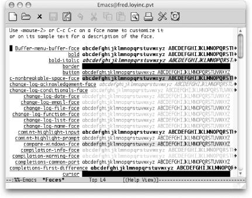

{% include JB/setup %}
{% raw %}
<div>
<div class="book" xml:lang="en"><div class="book"><div class="book"><div class="book"><h1 class="title"><a id="gnu3-CHP-9-SECT-2" class="calibre1"></a>Writing Code</h1></div></div></div><p class="copyright">We have already seen various examples of Emacs modes, including text
mode (see <a class="calibre2" href="ch02.html" title="Chapter 2. Editing">Chapter 2</a>) and shell mode (see <a class="calibre2" href="ch05.html" title="Chapter 5. Emacs as a Work Environment">Chapter 5</a>). Special functionality like the buffer
list (see <a class="calibre2" href="ch04.html" title="Chapter 4. Using Buffers, Windows, and Frames">Chapter 4</a>) and Dired (see <a class="calibre2" href="ch05.html" title="Chapter 5. Emacs as a Work Environment">Chapter 5</a>) are actually modes as well. All modes have
two basic components: an Emacs Lisp <span><em class="calibre7">package</em></span> that
implements the mode and a <span><em class="calibre7">function</em></span> that invokes
it.</p><div class="book" xml:lang="en"><div class="book"><div class="book"><div class="book"><h2 class="title1"><a id="gnu3-CHP-9-SECT-2.1" class="calibre1"></a>Language Modes</h2></div></div></div><p class="copyright">The version of Emacs on <a id="gnu3-CHP-9-ITERM-2531" class="calibre2"></a>
               <a id="gnu3-CHP-9-ITERM-2532" class="calibre2"></a>
               <a id="gnu3-CHP-9-ITERM-2533" class="calibre2"></a>
               <a id="gnu3-CHP-9-ITERM-2534" class="calibre2"></a>
               <a id="gnu3-CHP-9-ITERM-2535" class="calibre2"></a>
               <a id="gnu3-CHP-9-ITERM-2536" class="calibre2"></a>
               <a id="gnu3-CHP-9-ITERM-2537" class="calibre2"></a>
               <a id="gnu3-CHP-9-ITERM-2538" class="calibre2"></a>
               <a id="gnu3-CHP-9-ITERM-2539" class="calibre2"></a>which
<a id="gnu3-CHP-9-ITERM-2540" class="calibre2"></a>
               <a id="gnu3-CHP-9-ITERM-2541" class="calibre2"></a>
               <a id="gnu3-CHP-9-ITERM-2542" class="calibre2"></a>
               <a id="gnu3-CHP-9-ITERM-2543" class="calibre2"></a>
               <a id="gnu3-CHP-9-ITERM-2544" class="calibre2"></a>this book is based (21.3.5) comes with
language modes for Ada, assembly, awk, C, C++, Common Lisp, Fortran,
ICON, Java, Lisp, MIM, Modula-2, Objective-C, Pascal, Pike, Perl,
PROLOG, Python, Scheme, SGML, Simula, and SQL; future versions will
undoubtedly add more. Many—but not all—of the language
modes are "hooked" into Emacs so
that if you visit a file with the proper filename suffix, you will
automatically be put in the correct mode. To find out whether Emacs
does this for the language you use, look up your language in the
table of Emacs Lisp packages in Appendix B. If one or more suffixes
is listed in the right-hand column, Emacs invokes the mode for files
with those suffixes.</p><p class="copyright">However, if no suffix is listed (or if your compiler supports a
different suffix than the ones listed), you can set up Emacs to
invoke the mode automatically when you visit your source files. You
need to do two things: first, look again at the right-hand column in
the package table entry for your language, and you will find the name
of the function that invokes the mode (e.g., <span><strong class="calibre5">ada-mode</strong></span>, <span><strong class="calibre5">modula-2-mode</strong></span>). Second, you insert code in
your <span><em class="calibre7">.emacs</em></span> file that tells Emacs to
automatically load the proper package whenever you visit a file with
the suffix for the language in question.</p><p class="copyright">You need to write two lines of code for this customization. The first
uses the <span><strong class="calibre5">autoload</strong></span> function, which
tells Emacs where to look for commands it doesn't
already know about. It sets up an association between a function and
the package that implements the function so that when the function is
invoked for the first time, Emacs loads the package to get the code.
In our case, we need to create an association between a function that
invokes a language mode and the package that implements the mode.
This shows the format of <span><strong class="calibre5">autoload</strong></span>:</p><a id="I_9_tt436" class="calibre2"></a><pre class="programlisting">(autoload '<em class="calibre7"><code class="calibre32">function</code></em> "<em class="calibre7"><code class="calibre32">filename</code></em>"<em class="calibre7"><code class="calibre32"> </code></em>"<em class="calibre7"><code class="calibre32">description</code></em>" t)</pre><p class="copyright">Note the single quote preceding <code class="calibre21">function</code> and the
double quotes around <code class="calibre21">filename</code> and
<code class="calibre21">description</code>; for more details on this Lisp syntax,
see <a class="calibre2" href="ch11.html" title="Chapter 11. Emacs Lisp Programming">Chapter 11</a>. If you are a PHP programmer, for
example, you can grab the latest Emacs PHP mode from <a class="calibre2" href="http://sourceforge.net/projects/php-mode/">http://sourceforge.net/projects/php-mode/</a>
online. You would then put the following line in your
<span><em class="calibre7">.emacs</em></span> file:</p><a id="I_9_tt437" class="calibre2"></a><pre class="programlisting">(autoload 'php-mode "php-mode" "PHP editing mode." t)</pre><p class="copyright">This tells Emacs to load the <span><em class="calibre7">PHP</em></span> package when
the function <span><strong class="calibre5">php-mode</strong></span> is invoked for
the first time.</p><p class="copyright">The second line of code completes the picture by creating an
association between the suffix for source files in your language and
the mode-invoking function so that the function is automatically
invoked when you visit a file with the proper suffix. This involves
the Emacs global variable <span><strong class="calibre5">auto-mode-alist</strong></span>, covered in <a class="calibre2" href="ch10.html" title="Chapter 10. Customizing Emacs">Chapter 10</a>; it is a list of associations that Emacs
uses to put visited files in modes according to their names. To
create such an association for PHP mode so that Emacs puts all files
with the suffix <span><em class="calibre7">.php</em></span> in that mode, add this line
to your <span><em class="calibre7">.emacs</em></span> file:</p><a id="I_9_tt438" class="calibre2"></a><pre class="programlisting">(setq auto-mode-alist (cons '("\\.php$" . php-mode) auto-mode-alist))</pre><p class="copyright">This Lisp code sets up the following chain of events when you visit a
file whose suffix indicates source code in your programming language.
Let's say you visit the file
<span><em class="calibre7">pgm.php</em></span>. Emacs reads the file, then finds an
entry corresponding to the <span><em class="calibre7">.php</em></span> suffix in the
<span><strong class="calibre5">auto-mode-alist</strong></span> and tries to invoke
the associated function <span><strong class="calibre5">php-mode</strong></span>. It
notices that the function <span><strong class="calibre5">php-mode</strong></span>
doesn't exist, but that there is an <span><strong class="calibre5">autoload</strong></span> association between it and the
<span><em class="calibre7">PHP</em></span> package. It loads that package and, finding
the <span><strong class="calibre5">php-mode</strong></span> command, runs it. After
this, your buffer is in PHP mode.</p><p class="copyright">For some interpreted languages like Perl and Python, you will also
want to update the <span><strong class="calibre5">interpreter-mode-alist
global</strong></span> variable:</p><a id="I_9_tt439" class="calibre2"></a><pre class="programlisting">(setq interpreter-mode-alist
      (cons '("python" . python-mode)
            interpreter-mode-alist))</pre><p class="copyright">If your script file begins with the Unix interpreter prefix <span><strong class="calibre5">#!</strong></span>, Emacs checks that line to determine what
language you are using. That can be especially helpful when the
script file does not have a telltale extension like
<span><em class="calibre7">.py</em></span> or <span><em class="calibre7">.pl</em></span>.</p><div class="book" xml:lang="en"><div class="book"><div class="book"><div class="book"><h3 class="title4"><a id="gnu3-CHP-9-SECT-2.1.1" class="calibre1"></a>Syntax</h3></div></div></div><p class="copyright">Although language modes differ in exact
<a id="gnu3-CHP-9-ITERM-2545" class="calibre2"></a>
                  <a id="gnu3-CHP-9-ITERM-2546" class="calibre2"></a>functionality, they all support
the same basic concepts. The most important of these involves
knowledge of the <span><em class="calibre7">syntax</em></span> of the language in
question—its characters, vocabulary, and certain aspects of its
grammar. We have already seen that Emacs handles some syntactic
aspects of human language. When you edit regular text, Emacs knows
about words, sentences, and paragraphs: you can move the cursor and
delete text with respect to those units. It also knows about certain
kinds of punctuation, such as parentheses: when you type a right
parenthesis, it "flashes" the
matching left parenthesis by moving the cursor there for a second and
then returning.<sup class="calibre6">[<a id="gnu3-CHP-9-FNOTE-4" href="#ftn.gnu3-CHP-9-FNOTE-4" class="calibre2">4</a>]</sup> This is a convenient way of ensuring that your
parentheses match correctly.</p><p class="copyright">Emacs has knowledge about programming language syntax that is
analogous to its knowledge of human language syntax. In general, it
keeps track of the following basic syntactic elements:</p><div class="book"><ul class="itemizedlist"><li class="listitem"><p class="copyright">
                        <span><em class="calibre7">Words</em></span>, which correspond to
<span><em class="calibre7">identifiers</em></span> and <span><em class="calibre7">numbers</em></span> in
most programming languages.</p></li><li class="listitem"><p class="copyright">
                        <span><em class="calibre7">Punctuation</em></span>, which includes such things as
<span><em class="calibre7">operators</em></span> (e.g., <span><strong class="calibre5">+</strong></span>, <span><strong class="calibre5">-</strong></span>,
<span><strong class="calibre5">&lt;</strong></span>, and <span><strong class="calibre5">&gt;</strong></span>) and <span><em class="calibre7">statement
separators</em></span> (e.g., semicolons).</p></li><li class="listitem"><p class="copyright">
                        <span><em class="calibre7">Strings</em></span>, which are strings of characters to be
taken literally and surrounded by <span><em class="calibre7">delimiters</em></span>
(such as quotation marks).</p></li><li class="listitem"><p class="copyright">
                        <span><em class="calibre7">Parentheses</em></span>, which can include such things as
square brackets (<span><strong class="calibre5">[</strong></span> and <span><strong class="calibre5">]</strong></span>) and curly braces (<span><strong class="calibre5">{</strong></span> and <span><strong class="calibre5">}</strong></span>) as
well as regular parentheses.</p></li><li class="listitem"><p class="copyright">
                        <span><em class="calibre7">Whitespace</em></span>, such as spaces and tabs, which are
to be ignored.</p></li><li class="listitem"><p class="copyright">
                        <span><em class="calibre7">Comments</em></span>, which are
<a id="gnu3-CHP-9-ITERM-2547" class="calibre2"></a>
                        <a id="gnu3-CHP-9-ITERM-2548" class="calibre2"></a>
                        <a id="gnu3-CHP-9-ITERM-2549" class="calibre2"></a>
                        <a id="gnu3-CHP-9-ITERM-2550" class="calibre2"></a>
                        <a id="gnu3-CHP-9-ITERM-2551" class="calibre2"></a>
                        <a id="gnu3-CHP-9-ITERM-2552" class="calibre2"></a>strings of characters to be ignored and
surrounded by delimiters that depend on the language (e.g., <span><strong class="calibre5">/*</strong></span> and <span><strong class="calibre5">*/</strong></span> for
C, <span><strong class="calibre5">//</strong></span> and a newline for C++ and
Java, or semicolon (<span><strong class="calibre5">;</strong></span>) and a newline
for Lisp).</p></li></ul></div><p class="copyright">Emacs keeps this information internally in the form of
<span><em class="calibre7">syntax tables</em></span>; like keymaps (as described in
<a class="calibre2" href="ch10.html" title="Chapter 10. Customizing Emacs">Chapter 10</a>), Emacs has a
<span><em class="calibre7">global</em></span> syntax table used for all buffers, as
well a <span><em class="calibre7">local</em></span> table for each buffer, which varies
according to the mode the buffer is in. You can view the syntax table
for the current buffer by typing <span><strong class="calibre5">C-h
s</strong></span> (for <span><strong class="calibre5">describe-syntax</strong></span>).
In addition, language modes know about more advanced
language-dependent syntactic concepts like statements, statement
blocks, functions, subroutines, Lisp syntactic expressions, and so
on.</p></div></div><div class="book" xml:lang="en"><div class="book"><div class="book"><div class="book"><h2 class="title1"><a id="gnu3-CHP-9-SECT-2.2" class="calibre1"></a>Comments</h2></div></div></div><p class="copyright">All programming
<a id="gnu3-CHP-9-ITERM-2553" class="calibre2"></a>
               <a id="gnu3-CHP-9-ITERM-2554" class="calibre2"></a>languages
have comment syntax, so Emacs provides a few features that deal with
comments in general; these are made language-specific in each
language mode. The universal comment command for all language modes
is <span><strong class="calibre5">M-;</strong></span> (for <span><strong class="calibre5">indent-for-comment</strong></span>).<sup class="calibre6">[<a id="gnu3-CHP-9-FNOTE-5" href="#ftn.gnu3-CHP-9-FNOTE-5" class="calibre2">5</a>]</sup> When you type <span><strong class="calibre5">M-;</strong></span>, Emacs moves to a column equal to the
value of the variable <span><strong class="calibre5">comment-column</strong></span>; if the text on the line goes
past that column, it moves to one space past the last text character.
It then inserts a comment delimiter (or a pair of opening and closing
delimiters, as in /* and */ for C) and puts the cursor after the
opening delimiter.</p><p class="copyright">For example, if you want to add a comment to a statement, put the
cursor anywhere on the line containing that statement and type
<span><strong class="calibre5">M-;</strong></span>. The result is</p><a id="I_9_tt440" class="calibre2"></a><pre class="programlisting">      result += y;              /*  */</pre><p class="copyright">You can then type your comment in between the delimiters. If you were
to do the same thing on a longer line of code, say,</p><a id="I_9_tt441" class="calibre2"></a><pre class="programlisting">      q_i = term_arr[i].num_docs / total_docs;</pre><p class="copyright">the result would be</p><a id="I_9_tt442" class="calibre2"></a><pre class="programlisting">      q_i = term_arr[i].num_docs / total_docs; /*  */</pre><p class="copyright">You can customize the variable <span><strong class="calibre5">comment-column</strong></span>, of course, by putting the
appropriate code in your <span><em class="calibre7">.emacs</em></span> file. This is
the most useful way if you want to do it permanently. But if you want
to reset <span><strong class="calibre5">comment-column</strong></span> temporarily
within the current buffer, you can just move the cursor to where you
want the comment column to be and type <span><strong class="calibre5">C-x
;</strong></span> (for <span><strong class="calibre5">set-comment-column</strong></span>). Note that this command
affects only the value of <span><strong class="calibre5">comment-column</strong></span> in the current buffer; its
value in other buffers—even other buffers in the same
mode—is not changed.</p><p class="copyright">When you are typing a comment and want to continue it on the next
line, <span><strong class="calibre5">M-j</strong></span> (for <span><strong class="calibre5">indent-new-comment-line</strong></span>) does it. This command
starts a new comment on the next line (though some language modes
allow you to customize it so that it continues the same comment
instead). Say you have typed in the text of the comment for this
statement, and the cursor is at the end of the text:</p><a id="I_9_tt443" class="calibre2"></a><pre class="programlisting">      result += y;              /* add the multiplicand */</pre><p class="copyright">You want to extend the comment to another line. If you type <span><strong class="calibre5">M-j</strong></span>, you get the following:</p><a id="I_9_tt444" class="calibre2"></a><pre class="programlisting">      result += y;              /* add the multiplicand*/
                                /* <span>*</span>/</pre><p class="copyright">You can type the second line of your comment. You can also use
<span><strong class="calibre5">M-j</strong></span> to split existing comment text
into two lines. Assume your cursor is positioned like this:</p><a id="I_9_tt445" class="calibre2"></a><pre class="programlisting">      result += y;              /* add the multiplicand */</pre><p class="copyright">If you type <span><strong class="calibre5">M-j</strong></span> now, the result is:</p><a id="I_9_tt446" class="calibre2"></a><pre class="programlisting">      result += y;              /* add the */
                                /* <span>m</span>ultiplicand */</pre><p class="copyright">If you want to comment out a section of your code, you can use the
<span><strong class="calibre5">comment-region</strong></span> command (not bound to
keystrokes except in certain language modes). Assume you have code
that looks like this:</p><a id="I_9_tt447" class="calibre2"></a><pre class="programlisting">    this = is (a);
    section (of, source, code);
    that += (takes[up]-&gt;a * number);
    of (lines);</pre><p class="copyright">If you define a region in the usual way and type <span><strong class="calibre5">M-x comment-region</strong></span>, the result is:</p><a id="I_9_tt448" class="calibre2"></a><pre class="programlisting">/*     this = is (a); */
/*     section (of, source, code); */
/*     that += (takes[up]-&gt;a * number); */
/*     of (lines); */</pre><p class="copyright">You can easily get rid of <span><em class="calibre7">single-line</em></span> comments
by typing <span><strong class="calibre5">M-x kill-comment Enter</strong></span>,
which deletes any comment on the current line. The cursor does not
have to be within the comment. Each language mode has special
features relating to comments in the particular language, usually
including variables that let you customize commenting style.</p></div><div class="book" xml:lang="en"><div class="book"><div class="book"><div class="book"><h2 class="title1"><a id="gnu3-CHP-9-SECT-2.3" class="calibre1"></a>Indenting Code</h2></div></div></div><p class="copyright">In addition to syntactic knowledge, <a id="gnu3-CHP-9-ITERM-2555" class="calibre2"></a>
               <a id="gnu3-CHP-9-ITERM-2556" class="calibre2"></a>Emacs language modes contain
various features to help you produce nicely formatted code. These
features implement standards of indentation, commenting, and other
aspects of programming style, thus ensuring consistency and
readability, getting comments to line up, and so on. Perhaps more
importantly, they relieve you of the tiresome burden of supplying
correct indentation and even of remembering what the current
indentation is. The nicest thing about these standards is that they
are usually customizable.</p><p class="copyright">We have already seen that, in text mode, you can type <span><strong class="calibre5">C-j</strong></span> instead of <span><strong class="calibre5">Enter</strong></span>, at the end of a line, and Emacs indents
the next line properly for you. This indentation is controlled by the
variable <span><strong class="calibre5">left-margin</strong></span>, whose value is
the column to indent to. Much the same thing happens in programming
language modes, but the process is more flexible and complex.</p><p class="copyright">As in text mode, <span><strong class="calibre5">C-j</strong></span> indents the
next line properly in language modes. You can also indent any line
properly after it has been typed by pressing <span><strong class="calibre5">Tab</strong></span> with the cursor anywhere on the line.</p><p class="copyright">Some language modes have extra functionality attached to characters
that terminate statements—like semicolons or right curly
braces—so that when you type them, Emacs automatically indents
the current line. Emacs documentation calls this behavior
<span><em class="calibre7">electric</em></span>. Most language modes also have sets of
variables that control indentation style (and that you can
customize).</p><p class="copyright">
               <a class="calibre2" href="ch09s02.html#gnu3-CHP-9-TABLE-2" title="Table 9-2. Basic indentation commands">Table 9-2</a> lists a few other commands relating to
indentation that work according to the rules set up for the language
<a id="gnu3-CHP-9-ITERM-2557" class="calibre2"></a>
               <a id="gnu3-CHP-9-ITERM-2558" class="calibre2"></a>
               <a id="gnu3-CHP-9-ITERM-2559" class="calibre2"></a>in question.</p><div class="book"><a id="gnu3-CHP-9-TABLE-2" class="calibre2"></a><p class="title2"><b class="calibre25">Table 9-2. Basic indentation commands</b></p><div class="table-contents"><table summary="Basic indentation commands" class="calibre8"><colgroup class="calibre9"><col class="calibre10"/><col class="calibre10"/><col class="calibre10"/></colgroup><thead class="calibre11"><tr class="calibre12"><th class="calibre26">
                           <p class="copyright">
                              <span><strong class="calibre5">Keystrokes</strong></span>
                           </p>
                        </th><th class="calibre26">
                           <p class="copyright">
                              <span><strong class="calibre5">Command name</strong></span>
                           </p>
                        </th><th class="calibre27">
                           <p class="copyright">
                              <span><strong class="calibre5">Action</strong></span>
                           </p>
                        </th></tr></thead><tbody class="calibre15"><tr class="calibre12"><td class="calibre28">
                           <p class="copyright">
                              <span><strong class="calibre5">C-M-\</strong></span>
                           </p>
                        </td><td class="calibre28">
                           <p class="copyright">
                              <span><strong class="calibre5">indent-region</strong></span>
                           </p>
                        </td><td class="calibre29">
                           <p class="copyright">Indent each line between the cursor and mark.</p>
                        </td></tr><tr class="calibre12"><td class="calibre28">
                           <p class="copyright">
                              <span><strong class="calibre5">M-m</strong></span>
                           </p>
                        </td><td class="calibre28">
                           <p class="copyright">
                              <span><strong class="calibre5">back-to-indentation</strong></span>
                           </p>
                        </td><td class="calibre29">
                           <p class="copyright">Move to the first nonblank character on the line.</p>
                        </td></tr><tr class="calibre12"><td class="calibre30">
                           <p class="copyright">
                              <span><strong class="calibre5">M-^</strong></span>
                           </p>
                        </td><td class="calibre30">
                           <p class="copyright">
                              <span><strong class="calibre5">delete-indentation</strong></span>
                           </p>
                        </td><td class="calibre31">
                           <p class="copyright">Join this line to the previous one.</p>
                        </td></tr></tbody></table></div></div><br class="book"/><p class="copyright">The following is an example of what <span><strong class="calibre5">C-M-\</strong></span> does. This example is in C, and
subsequent examples refer to it. The concepts in all examples in this
section are applicable to most other languages; we cover analogous
Lisp and Java features in the sections on modes for those languages.</p><p class="copyright">Suppose you have the following C code:</p><a id="I_9_tt449" class="calibre2"></a><pre class="programlisting">int times (x, y)
int x, y;
{
int i;
int result = 0;

for (i = 0; i &lt; x; i++) 
{
result += y;
}
}</pre><p class="copyright">If you set mark at the beginning of this code, put the cursor at the
end, and type <span><strong class="calibre5">C-M-\</strong></span>, Emacs formats
it like this:</p><a id="I_9_tt450" class="calibre2"></a><pre class="programlisting">int times (x, y)
     int x, y;
{
  int i;
  int result = 0;
  
  for (i = 0; i &lt; x; i++) 
    {
      result += y;
    }
}</pre><p class="copyright">
               <span><strong class="calibre5">C-M-\</strong></span> is also handy for indenting an
entire file according to your particular indentation style: you can
just type <span><strong class="calibre5">C-x h</strong></span> (for <span><strong class="calibre5">mark-whole-buffer</strong></span>) followed by <span><strong class="calibre5">C-M-\</strong></span>.</p><p class="copyright">
               <span><strong class="calibre5">M-m</strong></span> is handy for moving to the
beginning of the actual code on a line. For example, assume your
cursor is positioned like this:</p><a id="I_9_tt451" class="calibre2"></a><pre class="programlisting">  int resul<span>t</span> = 0;</pre><p class="copyright">If you type <span><strong class="calibre5">M-m</strong></span>, it moves to the
beginning of the <span><strong class="calibre5">int</strong></span>:</p><a id="I_9_tt452" class="calibre2"></a><pre class="programlisting">               <span>i</span>nt result = 0;</pre><p class="copyright">As an example of <span><strong class="calibre5">M-^</strong></span>,
let's say you want the opening curly brace for the
<span><strong class="calibre5">for</strong></span> statement to appear on the same
line as the <span><strong class="calibre5">for</strong></span>. Put the cursor
anywhere on the line with the opening curly brace, type <span><strong class="calibre5">M-^</strong></span>, and the code looks like this:</p><a id="I_9_tt453" class="calibre2"></a><pre class="programlisting">  for (i = 0; i &lt; x; i++) {
      result += y;
    }</pre><p class="copyright">Language modes usually provide additional indentation commands that
relate to specific features of the language. Having covered the
general language mode concepts, we want to show you a few other
general utilities: <span><strong class="calibre5">etags</strong></span> and
font-lock mode. The <span><strong class="calibre5">etags</strong></span> facility
helps programmers who work on large, multifile programs. All language
modes can also take advantage of font-lock mode to make development
more efficient.</p></div><div class="book" xml:lang="en"><div class="book"><div class="book"><div class="book"><h2 class="title1"><a id="gnu3-CHP-9-SECT-2.4" class="calibre1"></a>etags</h2></div></div></div><p class="copyright">Another general feature of
<a id="gnu3-CHP-9-ITERM-2560" class="calibre2"></a>Emacs that applies to
programmers is the <span><strong class="calibre5">etags</strong></span>
facility.<sup class="calibre6">[<a id="gnu3-CHP-9-FNOTE-6" href="#ftn.gnu3-CHP-9-FNOTE-6" class="calibre2">6</a>]</sup> 
               <span><strong class="calibre5">etags</strong></span> works with code in many other languages
as well, including Fortran, Java, Perl, Pascal, LATEX,, Lisp, and
many assembly languages. If you work on large, multifile projects,
you will find <span><strong class="calibre5">etags</strong></span> to be an
enormous help.</p><p class="copyright">
               <span><strong class="calibre5">etags</strong></span> is basically a multifile
search facility <a id="gnu3-CHP-9-ITERM-2561" class="calibre2"></a>that
knows about C and Perl function definitions as well as searching in
general. With it, you can find a function anywhere in an entire
directory without having to remember in which file the function is
defined, and you can do searches and query-replaces that span
multiple files. <span><strong class="calibre5">etags</strong></span> uses
<span><em class="calibre7">tag tables</em></span>, which contain lists of function
names for each file in a directory along with information on where
the functions' definitions are located within the
files. Many of the commands associated with <span><strong class="calibre5">etags</strong></span> involve regular expressions (see <a class="calibre2" href="ch11.html" title="Chapter 11. Emacs Lisp Programming">Chapter 11</a>) in search strings.</p><p class="copyright">To use <span><strong class="calibre5">etags</strong></span>, you must first invoke
the separate <span><strong class="calibre5">etags</strong></span> program in your
current directory to create the tag table. Its arguments are the
files for which you want tag information. The usual way to invoke it
is <span><strong class="calibre5">etags *.[ch]</strong></span>, that is, building a
tag table from all files ending in <span><em class="calibre7">.c</em></span> or
<span><em class="calibre7">.h</em></span>. (That's for you C
programmers; other languages would use their appropriate extensions,
of course.) You can run <span><strong class="calibre5">etags</strong></span> from
shell mode or with the command <span><strong class="calibre5">M-!</strong></span>
(for <span><strong class="calibre5">shell-command</strong></span>). The output of
<span><strong class="calibre5">etags</strong></span> is the file
<span><em class="calibre7">TAGS</em></span>, which is the tag table. When you are
writing code, you can update your tag table to reflect new files and
function definitions by invoking <span><strong class="calibre5">etags</strong></span> again.</p><p class="copyright">After you have created the tag table, you need to make it known to
Emacs. To do this, type <span><strong class="calibre5">M-x visit-tags-table
Enter</strong></span>. This prompts you for the name of the tag table
file; the default is <span><em class="calibre7">TAGS</em></span> in the current
directory, as you would expect. After you execute this step, you can
use the various Emacs tags commands.</p><p class="copyright">The most important tag command is <span><strong class="calibre5">M-</strong></span>. (for <span><strong class="calibre5">find-tag</strong></span>). This command prompts you for a
string to use in searching the tag table for a function whose name
contains the string. Supply the search string, and Emacs visits the
file containing the matching function name in the current window and
goes to the first line of the function's definition.
A variation of <span><strong class="calibre5">M-</strong></span>. is <span><strong class="calibre5">C-x 4 </strong></span>. (for <span><strong class="calibre5">find-tag-other-window</strong></span>), which uses another
window instead of replacing the text in your current window.</p><p class="copyright">A nice feature of <span><strong class="calibre5">M-</strong></span>. is that it
picks up the word the cursor is on and uses it as the default search
string. For example, if your cursor is anywhere on the string
<span><strong class="calibre5">my_function</strong></span>, <span><strong class="calibre5">M-</strong></span>. uses <span><strong class="calibre5">my_function</strong></span> as the default. Thus, when you are
looking at a C statement that calls a function, you can type
<span><strong class="calibre5">M-</strong></span>. to see the code for that
function.</p><p class="copyright">If you have multiple functions with the same name, <span><strong class="calibre5">M-</strong></span>. finds the function in the file whose name
comes first in alphabetical order. To find the others, you can use
the command <span><strong class="calibre5">M-</strong></span>, (for <span><strong class="calibre5">tags-loop-continue</strong></span>) to find the next one (or
complain if there are no more). This feature is especially useful if
your directory contains more than one program, that is, if there is
more than one function called <span><em class="calibre7">main</em></span>. <span><strong class="calibre5">M-</strong></span>, also has other uses, as we will see.</p><p class="copyright">You can use the tag table to search for more than just function
definitions. The command <span><strong class="calibre5">M-x tags-search
Enter</strong></span> prompts for a regular expression; it searches
through all files listed in the tag table (such as, all
<span><em class="calibre7">.c</em></span> and <span><em class="calibre7">.h</em></span> files) for any
occurrence of the regular expression, whether it is a function name
or not. This capability is similar to the <span><strong class="calibre5">grep</strong></span> facility discussed earlier in this
chapter. After you have invoked <span><strong class="calibre5">tags-search</strong></span>, you can find additional matches
by typing <span><strong class="calibre5">M-</strong></span>,.</p><p class="copyright">There is also an analogous query-replace capability. The command
<span><strong class="calibre5">M-x tags-query-replace Enter</strong></span> does a
regular expression query-replace (see <a class="calibre2" href="ch03.html" title="Chapter 3. Search and Replace">Chapter 3</a>) on all files listed in the tag table. As
with the regular <span><strong class="calibre5">query-replace-regexp</strong></span> command, if you precede
<span><strong class="calibre5">tags-query-replace</strong></span> with a prefix
argument (i.e., <span><strong class="calibre5">C-u M-x tags-query-replace
Enter</strong></span>), Emacs replaces only matches that are whole words.
This feature is useful, for example, if you want to replace
occurrences of <span><strong class="calibre5">printf</strong></span> without
disturbing occurrences of <span><strong class="calibre5">fprintf</strong></span>.
If you exit a <span><strong class="calibre5">tags-query-replace</strong></span>
with <span><strong class="calibre5">Esc</strong></span> or <span><strong class="calibre5">C-g</strong></span>, you can resume it later by typing
<span><strong class="calibre5">M-</strong></span>,.</p><p class="copyright">The command <span><strong class="calibre5">M-x tags-apropos</strong></span> rounds
out the search facilities of <span><strong class="calibre5">etags</strong></span>.
If you give it a regular expression argument, it opens a
<code class="calibre21">*Tags List*</code> buffer that contains a list of all
tags in the tag table (including names of files as well as functions)
that match the regular expression. For example, if you want to find
out the names of output routines in a multiple-file C program, you
could invoke <span><strong class="calibre5">tags-apropos</strong></span> with the
argument <span><strong class="calibre5">print</strong></span> or <span><strong class="calibre5">write</strong></span>.</p><p class="copyright">Finally, you can type <span><strong class="calibre5">M-x list-tags
Enter</strong></span> to list all the tags in the table—that is, all
the functions—for a given C file. Supply the filename at the
prompt, and you get a <code class="calibre21">*Tags List*</code> buffer showing
the names of functions defined in that file along with their return
types (if any). Note that if you move your cursor to this list, you
can use <span><strong class="calibre5">M-</strong></span>. to look at the actual
code for the function. <span><strong class="calibre5">M-</strong></span>. picks up
the word the cursor is on as the default function name, so you can
just move the cursor to the name of the function you want to see and
press <span><strong class="calibre5">M-</strong></span>. followed by <span><strong class="calibre5">Enter</strong></span> to see it.</p></div><div class="book" xml:lang="en"><div class="book"><div class="book"><div class="book"><h2 class="title1"><a id="gnu3-CHP-9-SECT-2.5" class="calibre1"></a>Fonts and Font-lock Mode</h2></div></div></div><p class="copyright">There's one last common feature
<a id="gnu3-CHP-9-ITERM-2562" class="calibre2"></a>
               <a id="gnu3-CHP-9-ITERM-2563" class="calibre2"></a>
               <a id="gnu3-CHP-9-ITERM-2564" class="calibre2"></a>to mention. The use of fonts to help
present code is very popular—so popular, in fact, that it is
now universal. Unlike the indentation and formatting supported by the
various language modes, nothing in the code itself changes. But when
you're in font-lock mode, your program certainly
<span><em class="calibre7">looks</em></span> different.</p><p class="copyright">You can turn on this feature for any language mode with <span><strong class="calibre5">M-x font-lock-mode</strong></span> to see for yourself.
Keywords get a particular color; comments get a different color and
are often italicized; strings and literals get yet another color. It
can aid quick browsing of code. Many people come to depend on it much
the way they rely on proper indentation. If you become one of those
people, you'll want to make it the default for all
language sessions. You can add the following line to your
<span><em class="calibre7">.emacs</em></span> file to achieve this aim:</p><a id="I_9_tt454" class="calibre2"></a><pre class="programlisting">;; Turn on font-locking globally
(global-font-lock-mode t)</pre><p class="copyright">The colors and styles used are customizable if you
don't like the defaults. <span><strong class="calibre5">M-x
list-faces-display</strong></span> produces a list of the named faces
Emacs knows about. You'll see something similar to
the screen shown in <a class="calibre2" href="ch09s02.html#gnu3-CHP-9-FIG-1" title="Figure 9-1. Fonts available for customization in Emacs">Figure 9-1</a>.</p><div class="figure"><a id="gnu3-CHP-9-FIG-1" class="calibre2"></a><div class="figure-contents"><div class="mediaobject"><a id="I_9_tt455" class="calibre2"></a></div></div><p class="title3"><b class="calibre25">Figure 9-1. Fonts available for customization in Emacs</b></p></div><br class="book"/><p class="copyright">Of course, in real life, the colors and bold and whatnot should be
more pronounced. You'll also see quite a few more
faces. You can modify any of those faces with either <span><strong class="calibre5">M-x modify-face</strong></span> (a simple prompted
"wizard" approach) or <span><strong class="calibre5">M-x customize-face</strong></span> (the big fancy interactive
approach). You can also add lines to your <span><em class="calibre7">.emacs</em></span>
file for your favorite customizations. Here's an
example:</p><a id="I_9_tt456" class="calibre2"></a><pre class="programlisting"> '(font-lock-comment-face 
   ((((class color) (background light)) 
     (:foreground "Firebrick" :slant italic)))))</pre><p class="copyright">Note that not all displays support all of the possible variations of
bold, italic, underline, colors, and so on. This is a classic case of
"your mileage may vary." Still,
with the ability to customize it all yourself, you should be able to
find a combination that works well on your system.</p><p class="copyright">The remaining sections in this chapter deal with several of the
language-specific modes including JDEE, a suite of packages devoted
to the world of Java development in Emacs.</p><p class="copyright">You need not read all of these sections if you are interested in only
one or two of the languages. If you program in another language for
which Emacs has a mode, you may want to read one of the following
sections to get the "flavor" of a
language mode; all language modes have the same basic concepts, so
this should get you off to a good start. Indeed, many language modes
use another mode as a base. For example, Java mode is really just an
extension of C mode.</p></div><div class="book"><br class="book"/><hr class="calibre4"/><div class="book"><p class="copyright"><sup class="calibre6">[<a id="ftn.gnu3-CHP-9-FNOTE-4" href="#gnu3-CHP-9-FNOTE-4" class="calibre2">4</a>] </sup>Actually, there is a limit to how far
back (in characters) Emacs searches for a matching open parenthesis:
this is the value of the variable <span><strong class="calibre5">blink-matching-paren-distance</strong></span>, which defaults
to 25,600. The duration of the
"flash" is also configurable:
it's the value (in seconds) of <span><strong class="calibre5">blink-matching-delay</strong></span>, whose default value is
1.</p></div><div class="book"><p class="copyright"><sup class="calibre6">[<a id="ftn.gnu3-CHP-9-FNOTE-5" href="#gnu3-CHP-9-FNOTE-5" class="calibre2">5</a>] </sup>The key
binding is mnemonic for Lisp programmers because comments in Lisp
start with semicolons.</p></div><div class="book"><p class="copyright"><sup class="calibre6">[<a id="ftn.gnu3-CHP-9-FNOTE-6" href="#gnu3-CHP-9-FNOTE-6" class="calibre2">6</a>] </sup>
                     <span><strong class="calibre5">etags</strong></span> is
also a platform-specific feature. The <span><strong class="calibre5">etags</strong></span> facility is available on Unix platforms,
including Mac OS X.</p></div></div></div></div>

{% endraw %}

